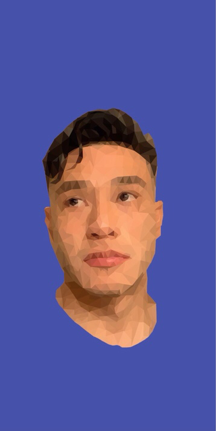
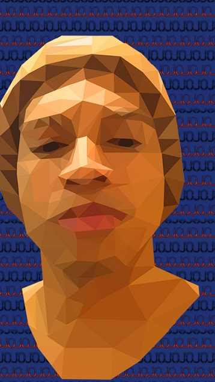
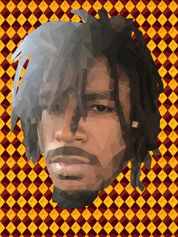
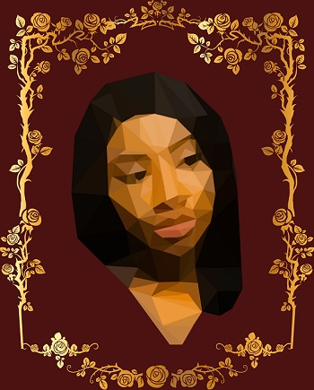

Devin
Here is a portrait of Devin that has a high amount of polygons, just look at how his hair came out. **chefs kiss**.
Lee
Here is lee who has a simple polygon portrait with a more abstracted look.
Shamar
Shamar's portrait has a nice headwear addition that the others do not.
Nick
Nick's portrait has a high-poly count.In this photo you can make out individual locs, plus loc jewlery complete with shadows from the light source coming in.
Keianna
A birthday commision, kieannia's portrait has presentated feel to it.